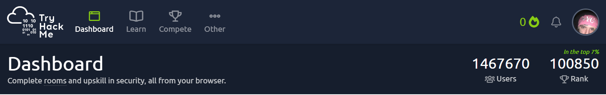

TryHackMe est une plateforme en ligne disposant des formations dans de multiples domaines de la cybersécurité offensive comme défensive.
J'ai débuté dans l'optique d'apprendre et comprendre ce qu'était la cybersécurité. Administration système, fonctionnement des machines et d'un réseau, TryHackme a su me faire découvrir un nouvel intérêt pour la cybersécurité.
Le principe est simple : on accède à une "room" via notre navigateur, puis on répond à des questions en pratiquant sur une "Attack Box". Leur fonctionnement est aussi captivant qu'efficace.